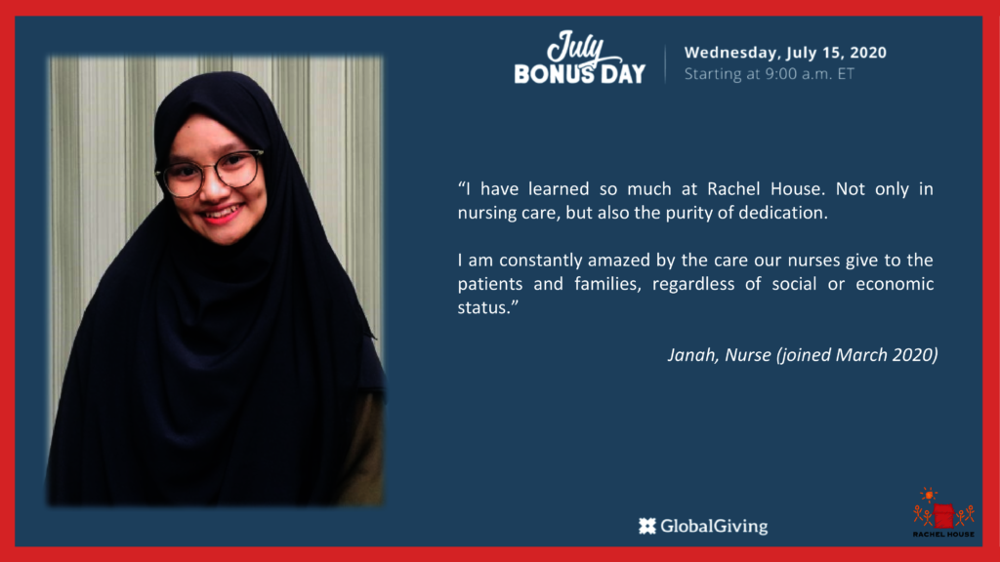
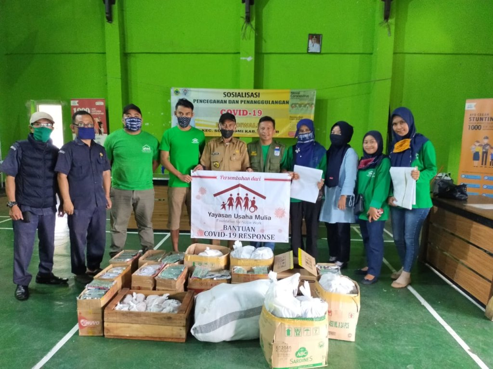
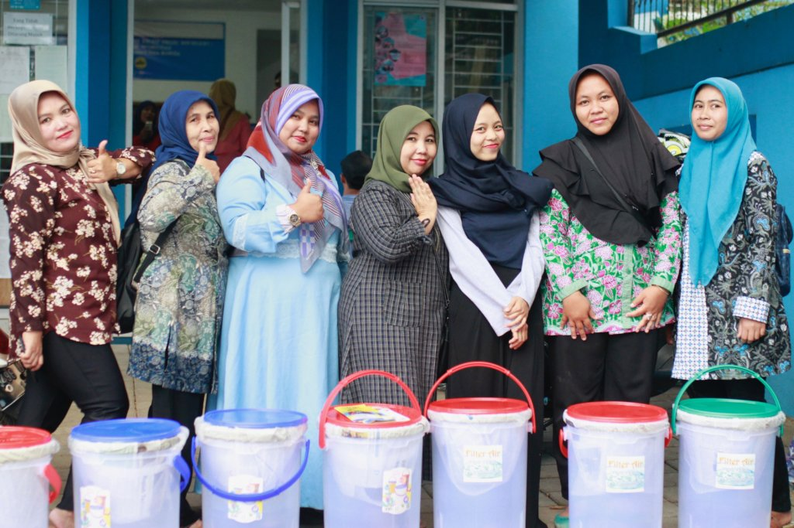

Rachel House:
Mission of Rachel House:
Rachel House was registered in November 2006 as a charitable organization under the name of Yayasan Rumah Rachel in Indonesia with the purpose of providing palliative care to children from poor and needy families living with life-threatening diseases, such as cancer and HIV.
Contact:Click here
Yayasan Rama Sesana:
Mission of Yayasan Rama Sesana:
We strive to increase knowledge, awareness and access to sexual and reproductive health services for the low-income women of Bali's traditional market communities through our Education Program and Medical Program. Our current model of providing health education and donation-based services to traditional market communities has been very successful in the capital Denpasar and Sanur. We now also deliver services to traditional market communities around Bali through our Mobile Clinic program.
Contact:Click here
Yayasan Usaha Mulia / Foundation for Noble Work
Mission of Yayasan Usaha Mulia / Foundation for Noble Work:
By keeping the most disadvantaged families in our communities safe and healthy, this will reduce potential loss of income due to a sick family member. Loss of income will only aggravate the issue of generational poverty within the family, which Yayasan Usaha Mulia is trying .By keeping the most disadvantaged families in our communities safe and healthy. Loss of income will only aggravate the issue of generational poverty within the family, which Yayasan Usaha Mulia is trying to put a stop to through our health projects.
Contact:Click here
Perkumpulan Pelita Indonesia
Mission of Perkumpulan Pelita Indonesia:
Through this project, 600 families in need will receive a ceramic water filter, providing access to life-saving clean drinking water for up to 3,000 people. These families will no longer have to spend the time and costly resources boiling water. They will also experience improved health and greater quality of life!
Contact:Click here